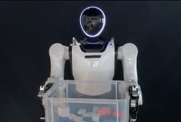
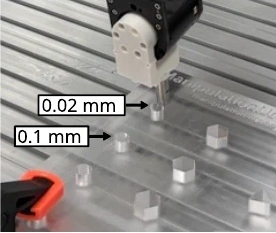
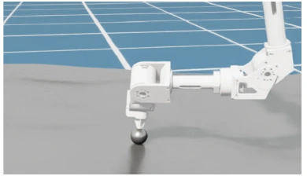
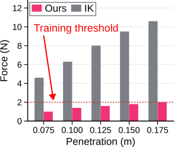
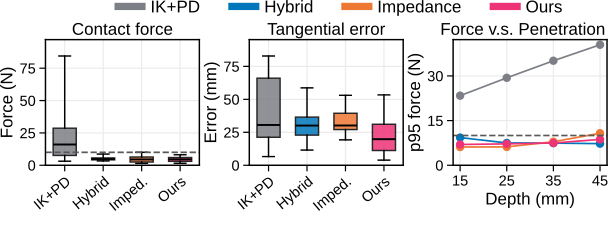
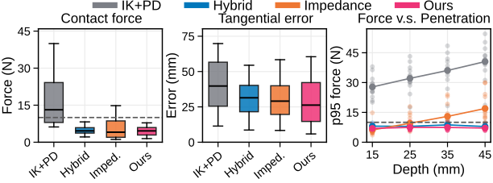
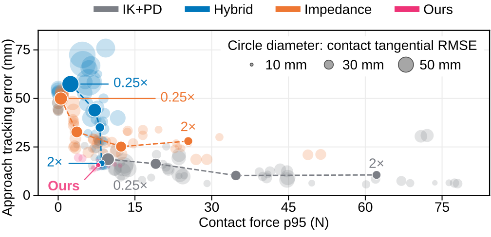

Dual-arm Robot Box Lifting (Real)

We used a dual-arm humanoid robot to lift a box. To provide high-level commands, we generated open-loop hand trajectories with target positions at varying depths inside the box.
Neuromeka AI Lab · Preprint 2026
Neuromeka Co., Ltd., Seoul, Republic of Korea
TL;DR: Using three interaction primitives, we train a blind policy in simulation that adapts robot motion to local environmental constraints, keeping interaction forces within a desired range while preserving task intent. The policy serves as an adaptive layer between task-level commands and the low-level robot controller.
During contact-rich manipulation, interactions between a robot and its environment carry information about local geometry: a surface prevents penetration, a bore guides a peg. A controller that exploits these interactions can comply with environmental constraints while preserving task intent. Robot-learning systems commonly use position, hybrid force–position, or Cartesian impedance control. Their prescribed tracking objectives, stiffness, or force-control directions may not match local constraints and may degrade performance. We learn a proprioceptive reflex policy in simulation on three simple interaction primitives: a spring, a plane, and a rail. The policy maps task-space commands to joint-position targets using state history, without direct force or geometrical measurements. Once trained, it serves as a frozen execution layer beneath higher-level controllers. We evaluate it in dual-arm box lifting, peg insertion, and surface following. In box lifting, the reflex kept the force below the threshold while the baseline failed. In rough-surface following it stayed below the 10 N reference, on par with tuned hybrid force-position control. In 0.02 mm peg insertion it reduced mean estimated contact force to less than half that of IK + PD while increasing hardware success rates from at most 22% to 36–58%. By separating contact response from command generation, the reflex policy provides motion planners, learned policies, and teleoperators with robust contact-rich execution.
Humans can feel the surface that they are interacting with and can adjust motions without looking. For example, during wiping, human doesn't need to look into the surface to maintain contact and apply the appropriate force. Inspired by this ability, we aim to enable robots to adapt to their environment similarly, balancing between force regulation and accurate position and orientation tracking.
To be more concrete, given a high level command in task space, we want to generate a low-level joint command to regulate the interaction force while maintain high position and orientation tracking accuracy. We call this a reflex policy.
Comparison of joint-position commands between an IK solver and our controller. In both videos, the orange robots show commanded joint positions, and the moving frames indicate the end-effector targets. The IK solver produces unsafe motions with high interaction forces, whereas our controller produces safer motions with lower interaction forces.
Scroll horizontally to see the full figure.
We train the reflex policy in simulation using reinforcement learning. The policy takes as input a history of robot states, an end-effector pose command, and a binary compliance mode. It outputs a joint-position command, which is then used by the robot’s low-level controller.
To simulate different interactions, we apply interaction forces at the robot’s end effector that depend on its position in space. We call these interaction primitives. There are three interaction primitives: spring, plane, and rail. The spring pulls the end effector toward a set point. The plane pushes it back when it penetrates the plane. The rail pulls it toward a straight line in space.
Drag the colored axis arrows or use the sliders to move the end effector. Drag the background to rotate the view. The orange arrow shows the interaction force. Reset restores the position and view.
We evaluated our reflex policy on three tasks: dual-arm box lifting, tight-clearance peg insertion, and surface following, using two different robots.

We used a dual-arm humanoid robot to lift a box. To provide high-level commands, we generated open-loop hand trajectories with target positions at varying depths inside the box.

We used a custom-built robot for the peg-in-hole insertion task in ManipulationNet. To provide high-level commands to the reflex policy, we trained an insertion policy in simulation using reinforcement learning.

We evaluated rough surface following with our custom-built robot in simulation. The surface was generated using Perlin noise, and high-level commands were provided by a generated trajectory.
To answer this question, we first evaluated whether the reflex policy is effective in limiting contact force with the dual-arm box lifting task. Experiment results in both simulation and real indicates that this is effective.
Scroll horizontally to see the full plot.

Comparison between IK and our reflex policy in the box-lifting task across different penetration depths. The IK controller generally made less stable contact and failed to lift the box at 17.5 cm. Our reflex policy lifted the box at all tested depths.
Commanded penetration depth
We then evaluated whether the reflex policy improves the performance of a learned high-level policy in peg-in-hole insertion. The results show that our method achieves higher success rates and shorter mean completion times in all reported comparisons across hole-position offsets and clearances.
Success rate
Success rate and completion time comparison between IK and Ours in the peg-in-hole task. Completion times are mean ± SD over successful trials.
Hole clearance
| Hole-position offset | Ours | IK + PD | ||
|---|---|---|---|---|
| Success rate | Completion time (s) | Success rate | Completion time (s) | |
| 0 mm | 49/50 | 12.02 ± 6.11 | 41/50 | 19.11 ± 5.65 |
| 2 mm | 50/50 | 11.98 ± 6.18 | 27/50 | 18.42 ± 6.76 |
| 5 mm | 50/50 | 12.48 ± 6.30 | 27/50 | 14.47 ± 7.87 |
| 9 mm | 39/50 | 11.80 ± 7.56 | 11/50 | 15.89 ± 8.03 |
| Hole-position offset | Ours | IK + PD | ||
|---|---|---|---|---|
| Success rate | Completion time (s) | Success rate | Completion time (s) | |
| 0 mm | 50/50 | 5.04 ± 2.34 | 50/50 | 9.12 ± 5.75 |
| 2 mm | 50/50 | 6.08 ± 4.40 | 44/50 | 10.86 ± 5.96 |
| 5 mm | 47/50 | 7.20 ± 6.25 | 35/50 | 12.20 ± 8.10 |
| 9 mm | 42/50 | 6.31 ± 5.80 | 33/50 | 14.13 ± 7.28 |
| 13 mm | 27/50 | 7.13 ± 6.61 | 19/50 | 14.03 ± 6.09 |
Unable to load this video. Please try another selection or reload the page.
Finally, we compared our controller with IK + PD, hybrid force–position control, and task-space impedance control in a simulated surface-following task. We generated trajectories with different commanded penetration depths on flat and rough surfaces. Our controller achieved force regulation and tangential position tracking comparable to the hybrid controller, while impedance control was more sensitive to penetration depth on rough terrain. As expected, all three alternatives produced lower contact forces and tangential tracking errors than IK + PD.
Contact force and tangential tracking error comparison between IK + PD, Hybrid, Impedance, and Ours during simulated surface following. The dashed line marks the 10 N force threshold; p95 denotes the 95th-percentile contact force.
Scroll horizontally to see the full plot.

Scroll horizontally to see the full plot.

To answer this question, we first conducted a simulation ablation study on the peg-in-hole task to evaluate the contribution of each interaction primitive. The results show a clear benefit from each primitive at tight tolerances (0.02 mm and 0.1 mm): removing any one primitive reduced the mean insertion success rate.
Insertion success rates for the full reflex policy and variants trained without each interaction primitive in the simulated peg-in-hole task. Results are mean ± SD over five training seeds.
| Controller | Hole tolerances | ||
|---|---|---|---|
| 0.02 mm | 0.1 mm | 1 mm | |
| Reflex (Ours) | 74.8 ± 4.6 | 93.1 ± 2.8 | 99.0 ± 0.3 |
| Ours without spring | 68.2 ± 1.8 | 65.0 ± 22.7 | 96.2 ± 0.6 |
| Ours without rail | 56.9 ± 2.3 | 76.1 ± 6.8 | 97.8 ± 0.2 |
| Ours without plane | 45.9 ± 33.7 | 67.2 ± 19.8 | 96.5 ± 3.0 |
Finally, we evaluated whether classical compliant controllers—hybrid force–position control and task-space impedance control—could achieve the same benefits. Using the surface-following task, we varied their gains to assess whether they could match our reflex policy’s performance. Across the tested gains, these controllers faced a trade-off between position tracking accuracy and contact force, while our reflex policy achieved this balance without task-specific tuning.

See the full paper for training details, baseline comparisons, and ablation studies.
@misc{nguyen2026learningreflexivebehaviorcontactrich,
title={Learning Reflexive Behavior for Contact-Rich Manipulation},
author={Quan Nguyen and Yunho Kim and Joonho Lee},
year={2026},
eprint={2610.02811},
archivePrefix={arXiv},
primaryClass={cs.RO},
url={https://arxiv.org/abs/2610.02811},
}